analysis3_part2
C. Coleman
10/19/2021
_The following is a example exercise showing correlation and linear LASSO modeling of many different viral symptoms to body temperature. Data was provided from Brian McKay’s Github repository. The code for this exercise from my Modern Applied Data Analysis class is located here: https://github.com/CarterColeman/CARTERCOLEMAN-MADA-analysis3_
Fit model analysis!
In this section, we will be using the clean_df data to split, train, and assess the fit model of flu-like symptom data completed in the last module.
As such, we will be using the Tidymodels package to continue practicing data analysis.
As always, I like to start by loading needed packages. Our core packages for this specific exercise will be here(), dpylr(), and tidymodels(). Additionally, I like to load tidyverse() just because I use it fairly often.
library(tidyverse) #Working with multiple Tidy packages## -- Attaching packages --------------------------------------- tidyverse 1.3.1 --## v ggplot2 3.3.5 v purrr 0.3.4
## v tibble 3.1.5 v dplyr 1.0.7
## v tidyr 1.1.4 v stringr 1.4.0
## v readr 2.0.1 v forcats 0.5.1## -- Conflicts ------------------------------------------ tidyverse_conflicts() --
## x dplyr::filter() masks stats::filter()
## x dplyr::lag() masks stats::lag()library(tidymodels) #Building models## Registered S3 method overwritten by 'tune':
## method from
## required_pkgs.model_spec parsnip## -- Attaching packages -------------------------------------- tidymodels 0.1.4 --## v broom 0.7.9 v rsample 0.1.0
## v dials 0.0.10 v tune 0.1.6
## v infer 1.0.0 v workflows 0.2.3
## v modeldata 0.1.1 v workflowsets 0.1.0
## v parsnip 0.1.7 v yardstick 0.0.8
## v recipes 0.1.17## -- Conflicts ----------------------------------------- tidymodels_conflicts() --
## x scales::discard() masks purrr::discard()
## x dplyr::filter() masks stats::filter()
## x recipes::fixed() masks stringr::fixed()
## x dplyr::lag() masks stats::lag()
## x yardstick::spec() masks readr::spec()
## x recipes::step() masks stats::step()
## * Dig deeper into tidy modeling with R at https://www.tmwr.orglibrary(dplyr) #data manipulation
library(here) #setting pathways for saving files## here() starts at C:/Data/Github/MADA/CARTERCOLEMAN-MADA-portfoliolibrary(rpart) #Model fitting##
## Attaching package: 'rpart'## The following object is masked from 'package:dials':
##
## prunelibrary(ranger) #Model fitting
library(glmnet) #Model fitting## Loading required package: Matrix##
## Attaching package: 'Matrix'## The following objects are masked from 'package:tidyr':
##
## expand, pack, unpack## Loaded glmnet 4.1-3Data Splitting and Training
Next, we need to load in out data. We are going to pull from the processed data folder using the here() function. Note that while we are reading in the clean_df data frame, we will be calling it “df” in this exercise.
#Next two lines load data frame for the linear and logistic regression analysis for the analysis3 portion of this MADA exercise.
clean_df_location <- here::here("Files", "processeddata.RDS")
clean_data2 <- readRDS(clean_df_location)
#These two lines are for loading an additional cleaned data frame used for the machine learning portion of this MADA analysis.
clean_df_location3 <- here::here("Files", "processeddata3.RDS")
clean_data3 <- readRDS(clean_df_location3)Now we are set to start our data splitting/training.
The first step is splitting our data into a training data set and a test data set. The training set will contain most of the original data (~75%), while the test data set will have a smaller portion (~25%). The training data is used to fit a model and the test data is to assess how good of a fit the data is.
# Split 3/4 of the data into training data
data_split <- initial_split(clean_data2, prop = 3/4)
# Make new data frames for training and test data
train_data <- training(data_split)
test_data <- testing(data_split)Assessing fit model for Nausea and all other outcomes.
Creating a Recipe and Workflow
At this stage, our data is split into training and test data sets. Now, we need to create a recipe and workflow to help process the train data for model building. The output is a function that will run the entire logistic regression model for any data set. Therefore, we can run the same model for the train and test data frames to create the exact same analysis workflow to ensure comparison
#Creates recipe
Recipe_Nausea <- recipe(Nausea ~ ., data = train_data)
#Define logistical regression model pipe
log_mod <- logistic_reg() %>%
set_engine("glm")
#Create workflow that adds our recipe and model
Nausea_glm_wflow <-
workflow() %>%
add_model(log_mod) %>%
add_recipe(Recipe_Nausea)Modeling Using the Workflow
Using the workflow above, lets not fit the model to the train data set (Recipe_Nausea).
#Defining a command that runs model fitting to Recipe_Nausea
Nausea_fit <-
Nausea_glm_wflow %>%
fit(data = train_data)
#Pull log reg fit model using parsnip()
Nausea_fit %>%
extract_fit_parsnip() %>%
tidy()## # A tibble: 38 x 5
## term estimate std.error statistic p.value
## <chr> <dbl> <dbl> <dbl> <dbl>
## 1 (Intercept) -3.87 9.14 -0.424 0.672
## 2 SwollenLymphNodesYes -0.314 0.226 -1.39 0.164
## 3 ChestCongestionYes 0.347 0.245 1.42 0.157
## 4 ChillsSweatsYes 0.562 0.337 1.67 0.0951
## 5 NasalCongestionYes 0.197 0.301 0.653 0.514
## 6 CoughYNYes -0.118 0.595 -0.199 0.842
## 7 SneezeYes 0.383 0.245 1.56 0.119
## 8 FatigueYes 0.200 0.410 0.487 0.626
## 9 SubjectiveFeverYes 0.0778 0.257 0.302 0.762
## 10 HeadacheYes 0.268 0.324 0.828 0.408
## # ... with 28 more rowsUsing Workflows to Make Predictions
Now that we have our modeling workflow, we are going to use the fitted model to predict values in the test data set.
#predict values in test data
predict(Nausea_fit, test_data)## Warning in predict.lm(object, newdata, se.fit, scale = 1, type = if (type == :
## prediction from a rank-deficient fit may be misleading## # A tibble: 183 x 1
## .pred_class
## <fct>
## 1 Yes
## 2 No
## 3 No
## 4 No
## 5 No
## 6 No
## 7 No
## 8 Yes
## 9 No
## 10 No
## # ... with 173 more rowsAdditionally, we can use the augment() function to predict outcomes in the test data. But unlike the predict() function, augment() indludes prediction residuals.
#Predict outcomes using augment in test data
Nausea_aug_test <-
augment(Nausea_fit, test_data)## Warning in predict.lm(object, newdata, se.fit, scale = 1, type = if (type == :
## prediction from a rank-deficient fit may be misleading
## Warning in predict.lm(object, newdata, se.fit, scale = 1, type = if (type == :
## prediction from a rank-deficient fit may be misleadingUsing ROC and ROC_AUC to Assess Model Fit
At this point, we have a fit model, a workflow for that model, and have some predictions made from a test subset of our data. Now, we need to used to test predictions to assess if the model can predict values that reflect our actual data. In particular, we will be using the the ROC curve as our metric with ROC_AUC to measure area under the ROC curve that our model intersects.
Assessing fit for test data predictions
#Make ROC curve for test data predictions and calculate area under the curve
Nausea_aug_test %>%
roc_curve(truth = Nausea, .pred_Yes, event_level = "second") %>%
autoplot()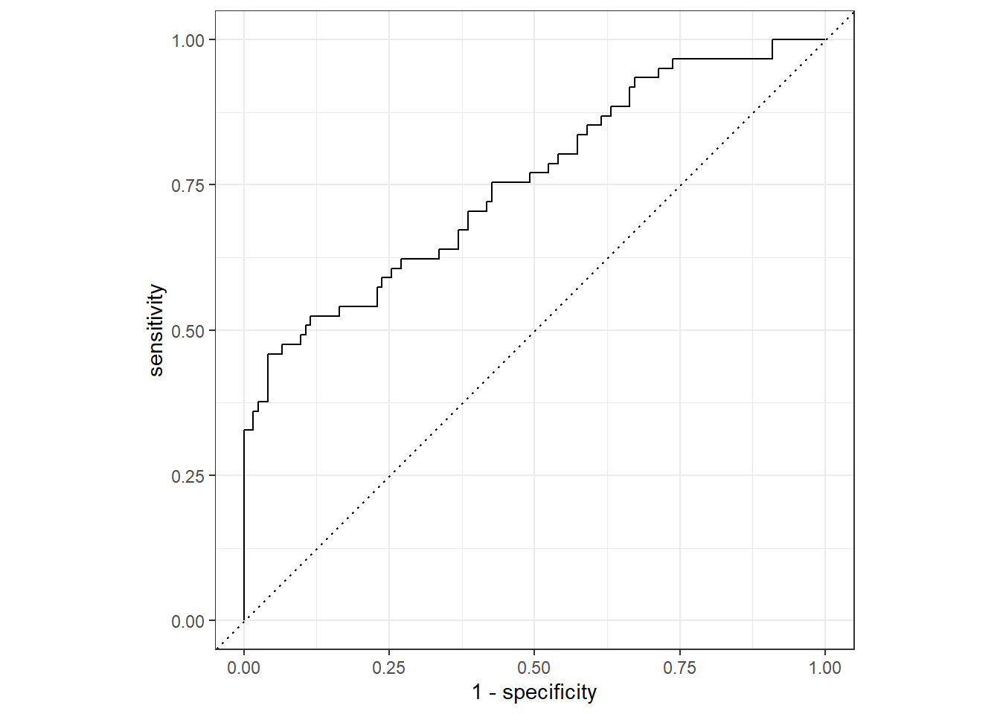
Nausea_aug_test %>%
roc_auc(truth = Nausea, .pred_Yes, event_level = "second")## # A tibble: 1 x 3
## .metric .estimator .estimate
## <chr> <chr> <dbl>
## 1 roc_auc binary 0.755#Predict outcomes using augment in training data
Nausea_aug_train <-
augment(Nausea_fit, train_data)## Warning in predict.lm(object, newdata, se.fit, scale = 1, type = if (type == :
## prediction from a rank-deficient fit may be misleading
## Warning in predict.lm(object, newdata, se.fit, scale = 1, type = if (type == :
## prediction from a rank-deficient fit may be misleading#Make ROC curve for training data and calculate area under the curve
Nausea_aug_train %>%
roc_curve(truth = Nausea, .pred_Yes, event_level = "second") %>%
autoplot()
Nausea_aug_train %>%
roc_auc(truth = Nausea, .pred_Yes, event_level = "second")## # A tibble: 1 x 3
## .metric .estimator .estimate
## <chr> <chr> <dbl>
## 1 roc_auc binary 0.770The resulting ROC_AUC values were 0.68 and 0.79 for the test data model and the training data model, respectively. This suggests that the models are good fits to our data and can predict outcomes.
Assessing fit model for Nausea and Runny Nose.
Creating a Recipe and Workflow
Create a recipe and workflow to help process the train data for model building.
#Creates recipe
Nausea_RN_Recipe <- recipe(Nausea ~ RunnyNose, data = train_data)
#Define logistical regression model pipe
log_mod <- logistic_reg() %>%
set_engine("glm")
#Create workflow that adds our recipe and model
Naus_RN_glm_wflow <-
workflow() %>%
add_model(log_mod) %>%
add_recipe(Nausea_RN_Recipe)Modeling Using the Workflow
Use workflow to fit the model to the train data set (Nausea_RN_Recipe).
#Defining a command that runs model fitting to Nausea_RN_Recipe
Nausea_RN_fit <-
Naus_RN_glm_wflow %>%
fit(data = train_data)
#Pull log reg fit model using parsnip()
Nausea_RN_fit %>%
extract_fit_parsnip() %>%
tidy()## # A tibble: 2 x 5
## term estimate std.error statistic p.value
## <chr> <dbl> <dbl> <dbl> <dbl>
## 1 (Intercept) -0.603 0.163 -3.69 0.000223
## 2 RunnyNoseYes 0.00626 0.195 0.0321 0.974Using Workflows to Make Predictions
Use the fitted model to predict values in the test data set.
#predict values in test data
predict(Nausea_RN_fit, test_data)## # A tibble: 183 x 1
## .pred_class
## <fct>
## 1 No
## 2 No
## 3 No
## 4 No
## 5 No
## 6 No
## 7 No
## 8 No
## 9 No
## 10 No
## # ... with 173 more rowsUse the augment() function to predict outcomes in the test data.
#Predict outcomes using augment in test data
Nausea_RN_aug_test <-
augment(Nausea_RN_fit, test_data)Using ROC and ROC_AUC to Assess Model Fit
Assessing fit for test data predictions
#Make ROC curve for test data predictions and calculate area under the curve
Nausea_RN_aug_test %>%
roc_curve(truth = Nausea, .pred_Yes, event_level = "second") %>%
autoplot()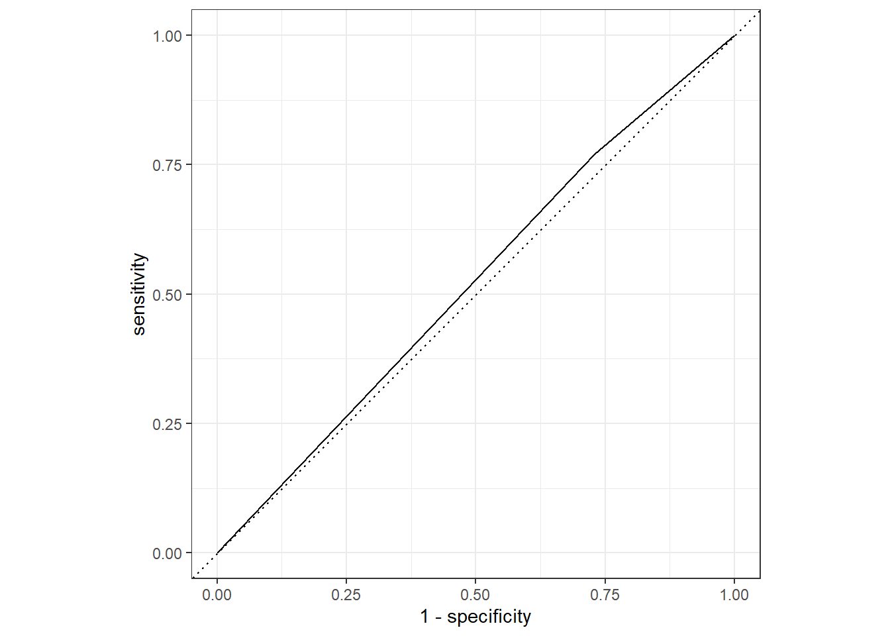
Nausea_RN_aug_test %>%
roc_auc(truth = Nausea, .pred_Yes, event_level = "second")## # A tibble: 1 x 3
## .metric .estimator .estimate
## <chr> <chr> <dbl>
## 1 roc_auc binary 0.520#Predict outcomes using augment in training data
Nausea_RN_aug_train <-
augment(Nausea_RN_fit, train_data)
#Make ROC curve for training data and calculate area under the curve
Nausea_RN_aug_train %>%
roc_curve(truth = Nausea, .pred_Yes, event_level = "second") %>%
autoplot()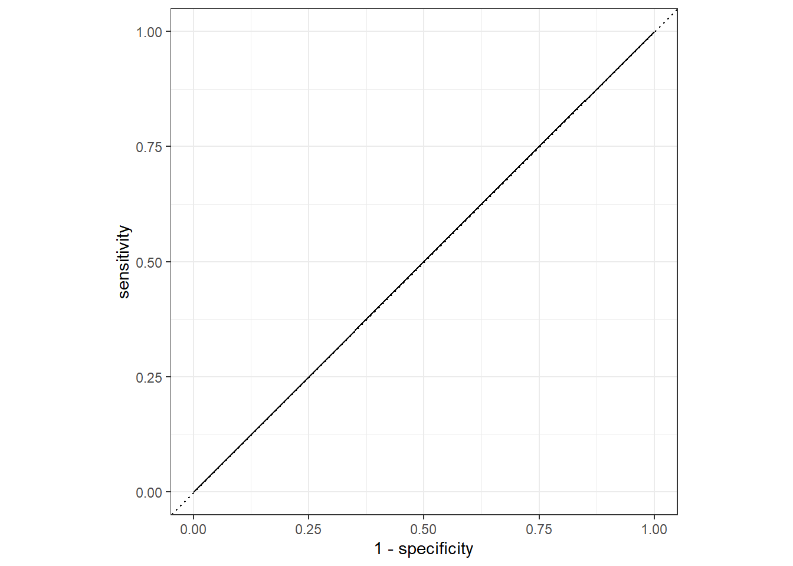
Nausea_RN_aug_train %>%
roc_auc(truth = Nausea, .pred_Yes, event_level = "second")## # A tibble: 1 x 3
## .metric .estimator .estimate
## <chr> <chr> <dbl>
## 1 roc_auc binary 0.501The resulting ROC_AUC values were 0.48 and 0.52. for the test data model and the training data model, respectively. This suggests that the test data was not fit well by the model, but the model had a decent fit to train data, but not a great fit. Therefore, since both ROC_AUC values are ~0.5, it is okay to make predictions using the model, but use caution.
Linear Modeling with Body Temperature as the Outcome. Contributor: Priyanka
Model Continous Outcomes
Creating the recipe for BodyTemp vs all predictors
BodyTemp.recipe <- recipe(BodyTemp ~ ., data = train_data)
BodyTemp.recipe## Recipe
##
## Inputs:
##
## role #variables
## outcome 1
## predictor 31Fitting a linear model
Setting up the linear model
lr.mod <- linear_reg() %>%
set_engine("lm") %>%
set_mode("regression")Create workflow that adds our recipe and model
BodyTemp.wflow <-
workflow() %>%
add_model(lr.mod) %>%
add_recipe(BodyTemp.recipe)BodyTemp.wflow## == Workflow ====================================================================
## Preprocessor: Recipe
## Model: linear_reg()
##
## -- Preprocessor ----------------------------------------------------------------
## 0 Recipe Steps
##
## -- Model -----------------------------------------------------------------------
## Linear Regression Model Specification (regression)
##
## Computational engine: lmUse workflow to fit the model to the train data set
BodyTemp_fit <-
BodyTemp.wflow %>%
fit(data = train_data)To view a tibble
BodyTemp_fit %>%
extract_fit_parsnip() %>%
tidy()## # A tibble: 38 x 5
## term estimate std.error statistic p.value
## <chr> <dbl> <dbl> <dbl> <dbl>
## 1 (Intercept) 97.9 0.357 275. 0
## 2 SwollenLymphNodesYes -0.185 0.105 -1.77 0.0777
## 3 ChestCongestionYes -0.000611 0.112 -0.00545 0.996
## 4 ChillsSweatsYes 0.213 0.144 1.48 0.139
## 5 NasalCongestionYes -0.302 0.134 -2.26 0.0245
## 6 CoughYNYes 0.556 0.281 1.98 0.0487
## 7 SneezeYes -0.317 0.114 -2.79 0.00539
## 8 FatigueYes 0.359 0.180 2.00 0.0463
## 9 SubjectiveFeverYes 0.413 0.117 3.52 0.000470
## 10 HeadacheYes -0.0254 0.143 -0.178 0.859
## # ... with 28 more rowsUsing Workflows to Make Predictions_
predict values in test data
predict(BodyTemp_fit, test_data)## Warning in predict.lm(object = object$fit, newdata = new_data, type =
## "response"): prediction from a rank-deficient fit may be misleading## # A tibble: 183 x 1
## .pred
## <dbl>
## 1 98.5
## 2 99.9
## 3 99.1
## 4 99.2
## 5 99.2
## 6 99.1
## 7 98.7
## 8 99.1
## 9 99.0
## 10 99.0
## # ... with 173 more rowsUsing augment() function to predict outcomes in the test data.
BodyTemp.aug <-
augment(BodyTemp_fit, test_data)## Warning in predict.lm(object = object$fit, newdata = new_data, type =
## "response"): prediction from a rank-deficient fit may be misleading# The data look like:
BodyTemp.aug %>%
select(BodyTemp, .pred)## # A tibble: 183 x 2
## BodyTemp .pred
## <dbl> <dbl>
## 1 101. 98.5
## 2 102. 99.9
## 3 99.3 99.1
## 4 97.8 99.2
## 5 98.4 99.2
## 6 100. 99.1
## 7 101. 98.7
## 8 100. 99.1
## 9 99.3 99.0
## 10 98.5 99.0
## # ... with 173 more rowsModel Evaluation With RMSE
BodyTemp.aug %>%
rmse(truth = BodyTemp, .pred)## # A tibble: 1 x 3
## .metric .estimator .estimate
## <chr> <chr> <dbl>
## 1 rmse standard 1.24#rmse = 1.12 Model with just the main predictor: Runnynose_
BT_RN_recipe <- recipe(BodyTemp ~ RunnyNose, data = train_data)
BT_RN_recipe## Recipe
##
## Inputs:
##
## role #variables
## outcome 1
## predictor 1Fitting a linear model
Setting up the linear model
lr.mod1 <- linear_reg() %>%
set_engine("lm") %>%
set_mode("regression")Create workflow that adds our recipe and model
BT_RN_wflow <-
workflow() %>%
add_model(lr.mod1) %>%
add_recipe(BT_RN_recipe)Use workflow to fit the model to the train data set
BT_RN_fit <-
BT_RN_wflow %>%
fit(data = train_data)To view a tibble
BT_RN_fit %>%
extract_fit_parsnip() %>%
tidy()## # A tibble: 2 x 5
## term estimate std.error statistic p.value
## <chr> <dbl> <dbl> <dbl> <dbl>
## 1 (Intercept) 99.0 0.0915 1083. 0
## 2 RunnyNoseYes -0.171 0.109 -1.56 0.119BT_RN_fit## == Workflow [trained] ==========================================================
## Preprocessor: Recipe
## Model: linear_reg()
##
## -- Preprocessor ----------------------------------------------------------------
## 0 Recipe Steps
##
## -- Model -----------------------------------------------------------------------
##
## Call:
## stats::lm(formula = ..y ~ ., data = data)
##
## Coefficients:
## (Intercept) RunnyNoseYes
## 99.0372 -0.1709Using Workflows to Make Predictions
predict values in test data
predict(BT_RN_fit, test_data)## # A tibble: 183 x 1
## .pred
## <dbl>
## 1 98.9
## 2 98.9
## 3 99.0
## 4 99.0
## 5 98.9
## 6 98.9
## 7 99.0
## 8 99.0
## 9 98.9
## 10 98.9
## # ... with 173 more rowsUsing augment() function to predict outcomes in the test data.
BT_RN_aug <-
augment(BT_RN_fit, test_data)
# The data look like:
BT_RN_aug %>%
select(BodyTemp, .pred)## # A tibble: 183 x 2
## BodyTemp .pred
## <dbl> <dbl>
## 1 101. 98.9
## 2 102. 98.9
## 3 99.3 99.0
## 4 97.8 99.0
## 5 98.4 98.9
## 6 100. 98.9
## 7 101. 99.0
## 8 100. 99.0
## 9 99.3 98.9
## 10 98.5 98.9
## # ... with 173 more rowsModel Evaluation With RMSE
BT_RN_aug %>%
rmse(truth = BodyTemp, .pred)## # A tibble: 1 x 3
## .metric .estimator .estimate
## <chr> <chr> <dbl>
## 1 rmse standard 1.25#rmse = 1.10Looking at the output, the model with all the predictor is better than model with just runny nose as a predictor.
Machine Learning Modeling: 11/1/2021; Carter Coleman
Data Set Up:
Set seed: This sets a random number generator with initial (pseudo)random values set as “123”. We will need a series of random numbers created for our machine learning analysis.
set.seed(123)Test/Train data split: Split data into a training data set and a test data set. The training set will contain most of the original data (70%), while the test data set will have a smaller portion (30%). The training data is used to fit a model and the test data is to assess how good of a fit the data is.
# Split 3/4 of the data into training data
data_split2 <- initial_split(clean_data3, prop = 7/10, strata = BodyTemp)
# Make new data frames for training and test data
train_data2 <- training(data_split2)
test_data2 <- testing(data_split2)Train Data: Body Temperature Null Model
5-fold cross validation, 5 times repeated for train data: Here we are setting a cross-validation of the machine learning models. Cross-validation is used to measure how the results of our machine learning models will generalize to an independent data set. As such, the folds created will be be 5 random sub-samples of the train data set to test the validity of our models within the train data set. The 5x5 structure is arbitrary.
fold_BT <- vfold_cv(train_data2, v = 5, repeats = 5, strata = BodyTemp)Creating the recipe for BodyTemp vs all predictors
BodyTemp.recipe2 <-
recipe(BodyTemp ~ ., data = train_data2) %>%
step_dummy(all_nominal(), -all_outcomes()) %>%
step_zv(all_predictors()) %>%
step_normalize(all_predictors())
BodyTemp.recipe2## Recipe
##
## Inputs:
##
## role #variables
## outcome 1
## predictor 29
##
## Operations:
##
## Dummy variables from all_nominal(), -all_outcomes()
## Zero variance filter on all_predictors()
## Centering and scaling for all_predictors()Setting linear regression model to assess relationship between body temperature (outcome) and all other predictor variables.
lm_mod <- linear_reg() %>% set_engine("lm") %>% set_mode("regression")However, first we need to create our null model to test against.
Null Model:
Creates null model recipe. When we call this term, it will indicate in our workflow that body temperature will be predicted by a value of 1 (NULL).
Null_recipe_lm_train <- recipe(BodyTemp ~ 1, data = train_data2)Creating the Workflow: this creates a set workflow for running a null linear regression model with body temperature as the outcome.
null_wf <- workflow() %>% add_model(lm_mod) %>% add_recipe(Null_recipe_lm_train)Here, I am going to fit the null model created in the above workflow to the folds made from the train data set.
null_train_lm <- fit_resamples(null_wf, resamples = fold_BT)## ! Fold1, Repeat1: internal: A correlation computation is required, but `estimate` is const...## ! Fold2, Repeat1: internal: A correlation computation is required, but `estimate` is const...## ! Fold3, Repeat1: internal: A correlation computation is required, but `estimate` is const...## ! Fold4, Repeat1: internal: A correlation computation is required, but `estimate` is const...## ! Fold5, Repeat1: internal: A correlation computation is required, but `estimate` is const...## ! Fold1, Repeat2: internal: A correlation computation is required, but `estimate` is const...## ! Fold2, Repeat2: internal: A correlation computation is required, but `estimate` is const...## ! Fold3, Repeat2: internal: A correlation computation is required, but `estimate` is const...## ! Fold4, Repeat2: internal: A correlation computation is required, but `estimate` is const...## ! Fold5, Repeat2: internal: A correlation computation is required, but `estimate` is const...## ! Fold1, Repeat3: internal: A correlation computation is required, but `estimate` is const...## ! Fold2, Repeat3: internal: A correlation computation is required, but `estimate` is const...## ! Fold3, Repeat3: internal: A correlation computation is required, but `estimate` is const...## ! Fold4, Repeat3: internal: A correlation computation is required, but `estimate` is const...## ! Fold5, Repeat3: internal: A correlation computation is required, but `estimate` is const...## ! Fold1, Repeat4: internal: A correlation computation is required, but `estimate` is const...## ! Fold2, Repeat4: internal: A correlation computation is required, but `estimate` is const...## ! Fold3, Repeat4: internal: A correlation computation is required, but `estimate` is const...## ! Fold4, Repeat4: internal: A correlation computation is required, but `estimate` is const...## ! Fold5, Repeat4: internal: A correlation computation is required, but `estimate` is const...## ! Fold1, Repeat5: internal: A correlation computation is required, but `estimate` is const...## ! Fold2, Repeat5: internal: A correlation computation is required, but `estimate` is const...## ! Fold3, Repeat5: internal: A correlation computation is required, but `estimate` is const...## ! Fold4, Repeat5: internal: A correlation computation is required, but `estimate` is const...## ! Fold5, Repeat5: internal: A correlation computation is required, but `estimate` is const...Calculate RMSE for the train data linear model.
Null_Train_Met <- collect_metrics(null_train_lm)
Null_Train_Met## # A tibble: 2 x 6
## .metric .estimator mean n std_err .config
## <chr> <chr> <dbl> <int> <dbl> <chr>
## 1 rmse standard 1.21 25 0.0177 Preprocessor1_Model1
## 2 rsq standard NaN 0 NA Preprocessor1_Model1_RMSE = 1.21, with a standard deviation of 0.018. This will serve as our check to test our models against latter on.
Test Data: Body Temperature Null Model
5-fold cross validation, 5 times repeated for test data: Here we are setting a cross-validation of the machine learning models. Cross-validation is used to measure how the results of our machine learning models will generalize to an independent data set. As such, the folds created will be be 5 random sub-samples of the test data set to test the validity of our models within the test data set. The 5x5 structure is arbitrary.
fold_BT_test <- vfold_cv(test_data2, v = 5, repeats = 5, strata = BodyTemp)Creating the recipe for BodyTemp vs all other variables as predictors.
BodyTemp.recipe2_test <-
recipe(BodyTemp ~ ., data = test_data2) %>%
step_dummy(all_nominal(), -all_outcomes()) %>%
step_zv(all_predictors()) %>%
step_normalize(all_predictors())
BodyTemp.recipe2_test## Recipe
##
## Inputs:
##
## role #variables
## outcome 1
## predictor 29
##
## Operations:
##
## Dummy variables from all_nominal(), -all_outcomes()
## Zero variance filter on all_predictors()
## Centering and scaling for all_predictors()Setting linear regression model to assess relationship between body temperature (outcome) and all other predictor variables. This is already set above in a universal form.
lm_mod <- linear_reg() %>% set_engine("lm") %>% set_mode("regression")Now, we need to create our null model to test against.
Null Model: Test Data
Creates null model recipe. When we call this term, it will indicate in our workflow that body temperature will be predicted by a value of 1 (NULL).
Null_recipe_lm_test <- recipe(BodyTemp ~ 1, data = test_data2)Creating the Workflow: this creates a set workflow for running a null linear regression model with body temperature as the outcome.
null_wf_test <- workflow() %>% add_model(lm_mod) %>% add_recipe(Null_recipe_lm_test)Here, I am going to fit the null model created in the above workflow to the folds made from the train data set.
null_lm_test <- fit_resamples(null_wf_test, resamples = fold_BT_test)## ! Fold1, Repeat1: internal: A correlation computation is required, but `estimate` is const...## ! Fold2, Repeat1: internal: A correlation computation is required, but `estimate` is const...## ! Fold3, Repeat1: internal: A correlation computation is required, but `estimate` is const...## ! Fold4, Repeat1: internal: A correlation computation is required, but `estimate` is const...## ! Fold5, Repeat1: internal: A correlation computation is required, but `estimate` is const...## ! Fold1, Repeat2: internal: A correlation computation is required, but `estimate` is const...## ! Fold2, Repeat2: internal: A correlation computation is required, but `estimate` is const...## ! Fold3, Repeat2: internal: A correlation computation is required, but `estimate` is const...## ! Fold4, Repeat2: internal: A correlation computation is required, but `estimate` is const...## ! Fold5, Repeat2: internal: A correlation computation is required, but `estimate` is const...## ! Fold1, Repeat3: internal: A correlation computation is required, but `estimate` is const...## ! Fold2, Repeat3: internal: A correlation computation is required, but `estimate` is const...## ! Fold3, Repeat3: internal: A correlation computation is required, but `estimate` is const...## ! Fold4, Repeat3: internal: A correlation computation is required, but `estimate` is const...## ! Fold5, Repeat3: internal: A correlation computation is required, but `estimate` is const...## ! Fold1, Repeat4: internal: A correlation computation is required, but `estimate` is const...## ! Fold2, Repeat4: internal: A correlation computation is required, but `estimate` is const...## ! Fold3, Repeat4: internal: A correlation computation is required, but `estimate` is const...## ! Fold4, Repeat4: internal: A correlation computation is required, but `estimate` is const...## ! Fold5, Repeat4: internal: A correlation computation is required, but `estimate` is const...## ! Fold1, Repeat5: internal: A correlation computation is required, but `estimate` is const...## ! Fold2, Repeat5: internal: A correlation computation is required, but `estimate` is const...## ! Fold3, Repeat5: internal: A correlation computation is required, but `estimate` is const...## ! Fold4, Repeat5: internal: A correlation computation is required, but `estimate` is const...## ! Fold5, Repeat5: internal: A correlation computation is required, but `estimate` is const...Calculate RMSE for the train data linear model.
Null_test_Met <- collect_metrics(null_lm_test)Model Tuning and Fitting
The following section sevrves three functions:
- Fit a Tree Model to our data using Body Temperature as the outcome of interest.
- Fit a LASSO Model to our data using Body Temperature as the outcome of interest.
- Fit a Tree Model to our data using Body Temperature as the outcome of interest.
Tree Model
Specifying The Model: Decision Tree
#Identifying hyperparameters we want to use.
tune_spec_dtree <-
decision_tree(
cost_complexity = tune(),
tree_depth = tune()
) %>%
set_engine("rpart") %>%
set_mode("regression")
tune_spec_dtree## Decision Tree Model Specification (regression)
##
## Main Arguments:
## cost_complexity = tune()
## tree_depth = tune()
##
## Computational engine: rpartTune Grid Specification: Decision Tree
#create a regular grid of values for using convenience functions for each hyperparameter.
tree_grid_dtree <-
dials::grid_regular(
cost_complexity(),
tree_depth(),
levels = 5)
tree_grid_dtree## # A tibble: 25 x 2
## cost_complexity tree_depth
## <dbl> <int>
## 1 0.0000000001 1
## 2 0.0000000178 1
## 3 0.00000316 1
## 4 0.000562 1
## 5 0.1 1
## 6 0.0000000001 4
## 7 0.0000000178 4
## 8 0.00000316 4
## 9 0.000562 4
## 10 0.1 4
## # ... with 15 more rowsCreating a Workflow: Decision Tree
dtree_wf <- workflow() %>%
add_model(tune_spec_dtree) %>%
add_recipe(BodyTemp.recipe2)Cross Validation with tunegrid(): Decision Tree
dtree_resample <-
dtree_wf %>%
tune_grid(
resamples = fold_BT,
grid = tree_grid_dtree
)## ! Fold1, Repeat1: internal: A correlation computation is required, but `estimate` is const...## ! Fold2, Repeat1: internal: A correlation computation is required, but `estimate` is const...## ! Fold3, Repeat1: internal: A correlation computation is required, but `estimate` is const...## ! Fold4, Repeat1: internal: A correlation computation is required, but `estimate` is const...## ! Fold5, Repeat1: internal: A correlation computation is required, but `estimate` is const...## ! Fold1, Repeat2: internal: A correlation computation is required, but `estimate` is const...## ! Fold2, Repeat2: internal: A correlation computation is required, but `estimate` is const...## ! Fold3, Repeat2: internal: A correlation computation is required, but `estimate` is const...## ! Fold4, Repeat2: internal: A correlation computation is required, but `estimate` is const...## ! Fold5, Repeat2: internal: A correlation computation is required, but `estimate` is const...## ! Fold1, Repeat3: internal: A correlation computation is required, but `estimate` is const...## ! Fold2, Repeat3: internal: A correlation computation is required, but `estimate` is const...## ! Fold3, Repeat3: internal: A correlation computation is required, but `estimate` is const...## ! Fold4, Repeat3: internal: A correlation computation is required, but `estimate` is const...## ! Fold5, Repeat3: internal: A correlation computation is required, but `estimate` is const...## ! Fold1, Repeat4: internal: A correlation computation is required, but `estimate` is const...## ! Fold2, Repeat4: internal: A correlation computation is required, but `estimate` is const...## ! Fold3, Repeat4: internal: A correlation computation is required, but `estimate` is const...## ! Fold4, Repeat4: internal: A correlation computation is required, but `estimate` is const...## ! Fold5, Repeat4: internal: A correlation computation is required, but `estimate` is const...## ! Fold1, Repeat5: internal: A correlation computation is required, but `estimate` is const...## ! Fold2, Repeat5: internal: A correlation computation is required, but `estimate` is const...## ! Fold3, Repeat5: internal: A correlation computation is required, but `estimate` is const...## ! Fold4, Repeat5: internal: A correlation computation is required, but `estimate` is const...## ! Fold5, Repeat5: internal: A correlation computation is required, but `estimate` is const...dtree_resample## Warning: This tuning result has notes. Example notes on model fitting include:
## internal: A correlation computation is required, but `estimate` is constant and has 0 standard deviation, resulting in a divide by 0 error. `NA` will be returned.
## internal: A correlation computation is required, but `estimate` is constant and has 0 standard deviation, resulting in a divide by 0 error. `NA` will be returned.
## internal: A correlation computation is required, but `estimate` is constant and has 0 standard deviation, resulting in a divide by 0 error. `NA` will be returned.## # Tuning results
## # 5-fold cross-validation repeated 5 times using stratification
## # A tibble: 25 x 5
## splits id id2 .metrics .notes
## <list> <chr> <chr> <list> <list>
## 1 <split [405/103]> Repeat1 Fold1 <tibble [50 x 6]> <tibble [1 x 1]>
## 2 <split [405/103]> Repeat1 Fold2 <tibble [50 x 6]> <tibble [1 x 1]>
## 3 <split [406/102]> Repeat1 Fold3 <tibble [50 x 6]> <tibble [1 x 1]>
## 4 <split [408/100]> Repeat1 Fold4 <tibble [50 x 6]> <tibble [1 x 1]>
## 5 <split [408/100]> Repeat1 Fold5 <tibble [50 x 6]> <tibble [1 x 1]>
## 6 <split [405/103]> Repeat2 Fold1 <tibble [50 x 6]> <tibble [1 x 1]>
## 7 <split [405/103]> Repeat2 Fold2 <tibble [50 x 6]> <tibble [1 x 1]>
## 8 <split [406/102]> Repeat2 Fold3 <tibble [50 x 6]> <tibble [1 x 1]>
## 9 <split [408/100]> Repeat2 Fold4 <tibble [50 x 6]> <tibble [1 x 1]>
## 10 <split [408/100]> Repeat2 Fold5 <tibble [50 x 6]> <tibble [1 x 1]>
## # ... with 15 more rowsdtree_resample %>%
collect_metrics()## # A tibble: 50 x 8
## cost_complexity tree_depth .metric .estimator mean n std_err .config
## <dbl> <int> <chr> <chr> <dbl> <int> <dbl> <chr>
## 1 0.0000000001 1 rmse standard 1.19 25 0.0181 Prepro~
## 2 0.0000000001 1 rsq standard 0.0361 25 0.00422 Prepro~
## 3 0.0000000178 1 rmse standard 1.19 25 0.0181 Prepro~
## 4 0.0000000178 1 rsq standard 0.0361 25 0.00422 Prepro~
## 5 0.00000316 1 rmse standard 1.19 25 0.0181 Prepro~
## 6 0.00000316 1 rsq standard 0.0361 25 0.00422 Prepro~
## 7 0.000562 1 rmse standard 1.19 25 0.0181 Prepro~
## 8 0.000562 1 rsq standard 0.0361 25 0.00422 Prepro~
## 9 0.1 1 rmse standard 1.21 25 0.0177 Prepro~
## 10 0.1 1 rsq standard NaN 0 NA Prepro~
## # ... with 40 more rowsPlot model performance using autoplot()
dtree_resample %>%
autoplot()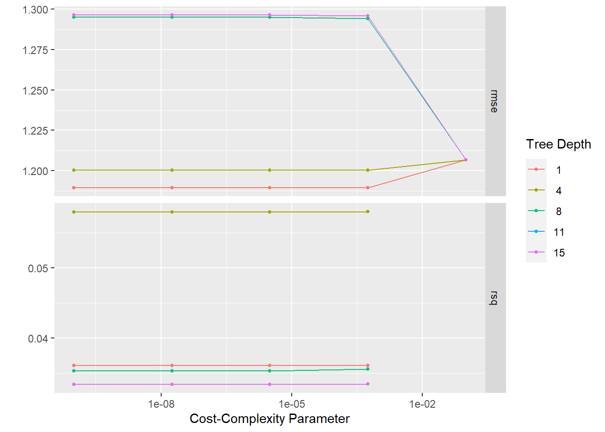
Showing and selecting best performing Models
#Showing best performing tree models
dtree_resample %>%
show_best(n=1)## Warning: No value of `metric` was given; metric 'rmse' will be used.## # A tibble: 1 x 8
## cost_complexity tree_depth .metric .estimator mean n std_err .config
## <dbl> <int> <chr> <chr> <dbl> <int> <dbl> <chr>
## 1 0.0000000001 1 rmse standard 1.19 25 0.0181 Preprocesso~#Selects best performing model
best_tree <- dtree_resample %>%
select_best()## Warning: No value of `metric` was given; metric 'rmse' will be used.This shows that one of the shortest trees (depth = 1) is the best performing models (RMSE = 1.19; STE = 0.018). However, it doesn’t really perform any better than the null model, making it a bad fit to the data.
Creating final fit based on best model permutation and plotting predicted values from that final fit model
dtree_final_wf <-
dtree_wf %>%
finalize_workflow(best_tree)
dtree_final_wf## == Workflow ====================================================================
## Preprocessor: Recipe
## Model: decision_tree()
##
## -- Preprocessor ----------------------------------------------------------------
## 3 Recipe Steps
##
## * step_dummy()
## * step_zv()
## * step_normalize()
##
## -- Model -----------------------------------------------------------------------
## Decision Tree Model Specification (regression)
##
## Main Arguments:
## cost_complexity = 1e-10
## tree_depth = 1
##
## Computational engine: rpart#Create workflow for fitting model to train_data2 predictions
dtree_final_fit <-
dtree_final_wf %>%
fit(train_data2) Calculating residuals and ploting Actual vs. Predicted values
Calculating residuals: In the Tidymodels tutorial used to do this exercise, I could not get the built in functions to cooperate (looking at you autoplot()). This is because autoplot() cannot use the output of any predict functions. Therefore, below is how we do it manually.
dtree_residuals <- dtree_final_fit %>%
augment(train_data2) %>% #use augment() to make predictions from train data
select(c(.pred, BodyTemp)) %>%
mutate(.resid = BodyTemp - .pred) #calculate residuals and make new row.
dtree_residuals## # A tibble: 508 x 3
## .pred BodyTemp .resid
## <dbl> <dbl> <dbl>
## 1 99.2 97.8 -1.44
## 2 99.2 98.1 -1.14
## 3 98.7 98.1 -0.591
## 4 98.7 98.2 -0.491
## 5 98.7 97.8 -0.891
## 6 98.7 98.2 -0.491
## 7 98.7 98.1 -0.591
## 8 99.2 98 -1.24
## 9 99.2 97.7 -1.54
## 10 99.2 98.2 -1.04
## # ... with 498 more rowsmodel predictions from tuned model vs actual outcomes
dtree_pred_plot <- ggplot(dtree_residuals,
aes(x = BodyTemp,
y = .pred)) +
geom_point() +
labs(title = "Predictions vs Actual: Decision Tree",
x = "Body Temperature Outcome",
y = "Body Temperature Prediction")
dtree_pred_plot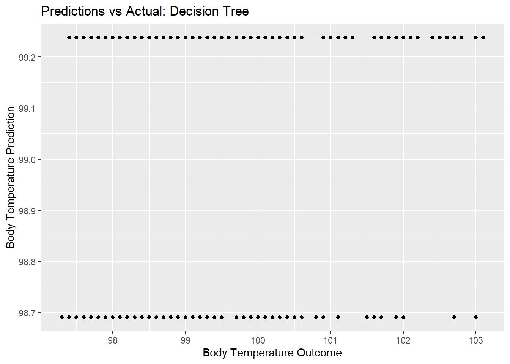 plot residuals vs predictions
dtree_residual_plot <- ggplot(dtree_residuals,
aes(y = .resid,
x = .pred)) +
geom_point() +
labs(title = "Predictions vs Residuals: Decision Tree",
x = "Body Temperature Prediction",
y = "Residuals")
plot(dtree_residual_plot) #view plot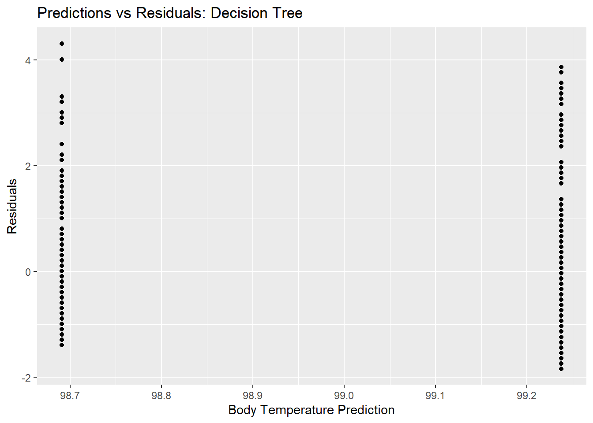
LASSO Model
Specifying The Model: LASSO
lasso_mod <-
linear_reg(penalty = tune(), mixture = 1) %>%
set_engine("glmnet")Creating a Workflow: LASSO
lasso_wf <- workflow() %>%
add_model(lasso_mod) %>%
add_recipe(BodyTemp.recipe2)Create Tuning Grid: LASSO
lasso_grid <- tibble(penalty = 10^seq(-3, 0, length.out = 30))Cross Validation with tune_grid(): LASSO
lasso_resample <-
lasso_wf %>%
tune_grid(resamples = fold_BT,
grid = lasso_grid,
control = control_grid(verbose = FALSE, save_pred = TRUE),
metrics = metric_set(rmse))
lasso_resample %>%
collect_metrics()## # A tibble: 30 x 7
## penalty .metric .estimator mean n std_err .config
## <dbl> <chr> <chr> <dbl> <int> <dbl> <chr>
## 1 0.001 rmse standard 1.18 25 0.0163 Preprocessor1_Model01
## 2 0.00127 rmse standard 1.18 25 0.0163 Preprocessor1_Model02
## 3 0.00161 rmse standard 1.18 25 0.0163 Preprocessor1_Model03
## 4 0.00204 rmse standard 1.18 25 0.0163 Preprocessor1_Model04
## 5 0.00259 rmse standard 1.17 25 0.0163 Preprocessor1_Model05
## 6 0.00329 rmse standard 1.17 25 0.0163 Preprocessor1_Model06
## 7 0.00418 rmse standard 1.17 25 0.0163 Preprocessor1_Model07
## 8 0.00530 rmse standard 1.17 25 0.0164 Preprocessor1_Model08
## 9 0.00672 rmse standard 1.17 25 0.0164 Preprocessor1_Model09
## 10 0.00853 rmse standard 1.17 25 0.0164 Preprocessor1_Model10
## # ... with 20 more rowsPlot model performance using autoplot()
#Plot of actual train_data2
lasso_resample %>%
autoplot()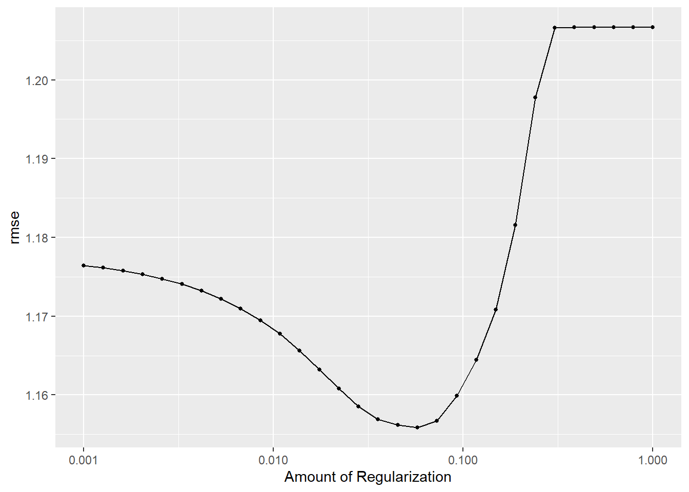
Showing and selecting best performing Models
#Showing best performing tree models
lasso_resample %>%
show_best()## # A tibble: 5 x 7
## penalty .metric .estimator mean n std_err .config
## <dbl> <chr> <chr> <dbl> <int> <dbl> <chr>
## 1 0.0574 rmse standard 1.16 25 0.0169 Preprocessor1_Model18
## 2 0.0452 rmse standard 1.16 25 0.0168 Preprocessor1_Model17
## 3 0.0728 rmse standard 1.16 25 0.0171 Preprocessor1_Model19
## 4 0.0356 rmse standard 1.16 25 0.0167 Preprocessor1_Model16
## 5 0.0281 rmse standard 1.16 25 0.0167 Preprocessor1_Model15#Selects best performing model
best_lasso <- lasso_resample %>%
select_best()This shows that model 18 is the best performing models (RMSE = 1.16; STE = 0.017). However, it doesn’t really perform any better than the null model, making it a bad fit to the data.
Creating final fit based on best model permutation and plotting predicted values from that final fit model
lasso_final_wf <-
lasso_wf %>%
finalize_workflow(best_lasso)
lasso_final_wf## == Workflow ====================================================================
## Preprocessor: Recipe
## Model: linear_reg()
##
## -- Preprocessor ----------------------------------------------------------------
## 3 Recipe Steps
##
## * step_dummy()
## * step_zv()
## * step_normalize()
##
## -- Model -----------------------------------------------------------------------
## Linear Regression Model Specification (regression)
##
## Main Arguments:
## penalty = 0.0573615251044868
## mixture = 1
##
## Computational engine: glmnet#Create workflow for fitting model to train_data2 predictions
lasso_final_fit <-
lasso_final_wf %>%
fit(train_data2) Calculating residuals: In the Tidymodels tutorial used to do this exercise, I could not get the built in functions to cooperate (looking at you autoplot()). This is because autoplot() cannot use the output of any predict functions. Therefore, below is how we do it manually.
lasso_residuals <- lasso_final_fit %>%
augment(train_data2) %>% #use augment() to make predictions from train data
select(c(.pred, BodyTemp)) %>%
mutate(.resid = BodyTemp - .pred) #calculate residuals and make new row.
lasso_residuals## # A tibble: 508 x 3
## .pred BodyTemp .resid
## <dbl> <dbl> <dbl>
## 1 98.7 97.8 -0.916
## 2 98.8 98.1 -0.675
## 3 98.5 98.1 -0.354
## 4 98.9 98.2 -0.673
## 5 98.7 97.8 -0.941
## 6 98.7 98.2 -0.489
## 7 98.3 98.1 -0.210
## 8 99.3 98 -1.25
## 9 98.9 97.7 -1.19
## 10 98.9 98.2 -0.749
## # ... with 498 more rowsmodel predictions from tuned model vs actual outcomes
lasso_pred_plot <- ggplot(lasso_residuals,
aes(x = BodyTemp,
y = .pred)) +
geom_point() +
labs(title = "Predictions vs Actual: LASSO",
x = "Body Temperature Outcome",
y = "Body Temperature Prediction")
lasso_pred_plot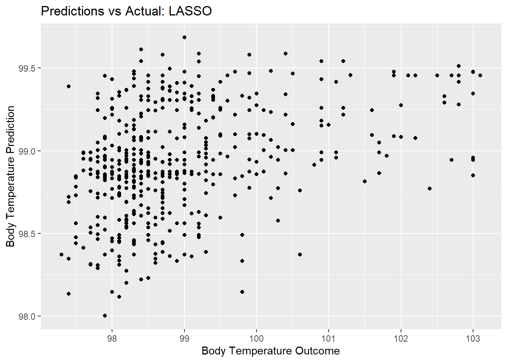 plot residuals vs predictions
lasso_residual_plot <- ggplot(lasso_residuals,
aes(y = .resid,
x = .pred)) +
geom_point() +
labs(title = "Predictions vs Residuals: LASSO",
x = "Body Temperature Prediction",
y = "Residuals")
plot(lasso_residual_plot) #view plot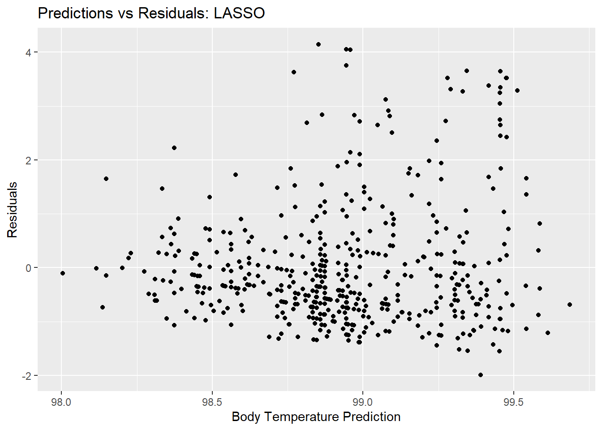
Random Forest
Create function to detect cores for Random Forest Model computation
cores <- parallel::detectCores()
cores## [1] 8Specifying The Model: Random Forest
rf_mod <-
rand_forest(mtry = tune(), min_n = tune(), trees = 1000) %>%
set_engine("ranger", num.threads = cores) %>%
set_mode("regression")Creating a Workflow: Random Forest
rf_wf <- workflow() %>%
add_model(rf_mod) %>%
add_recipe(BodyTemp.recipe2)Create Tuning Grid: Random Forest
rf_grid <- expand.grid(mtry = c(3, 4, 5, 6), min_n = c(40,50,60), trees = c(500,1000) )Cross Validation with tune_grid(): Random Forest
rf_resample <-
rf_wf %>%
tune_grid(fold_BT,
grid = 25,
control = control_grid(save_pred = TRUE),
metrics = metric_set(rmse))## i Creating pre-processing data to finalize unknown parameter: mtryrf_resample %>%
collect_metrics()## # A tibble: 25 x 8
## mtry min_n .metric .estimator mean n std_err .config
## <int> <int> <chr> <chr> <dbl> <int> <dbl> <chr>
## 1 20 10 rmse standard 1.20 25 0.0161 Preprocessor1_Model01
## 2 29 39 rmse standard 1.18 25 0.0166 Preprocessor1_Model02
## 3 22 27 rmse standard 1.18 25 0.0164 Preprocessor1_Model03
## 4 25 23 rmse standard 1.19 25 0.0165 Preprocessor1_Model04
## 5 27 25 rmse standard 1.19 25 0.0164 Preprocessor1_Model05
## 6 2 30 rmse standard 1.17 25 0.0170 Preprocessor1_Model06
## 7 13 37 rmse standard 1.17 25 0.0163 Preprocessor1_Model07
## 8 18 12 rmse standard 1.19 25 0.0164 Preprocessor1_Model08
## 9 31 15 rmse standard 1.20 25 0.0164 Preprocessor1_Model09
## 10 14 18 rmse standard 1.18 25 0.0162 Preprocessor1_Model10
## # ... with 15 more rowsPlot model performance using autoplot()
#Plot of actual train_data2
rf_resample %>%
autoplot()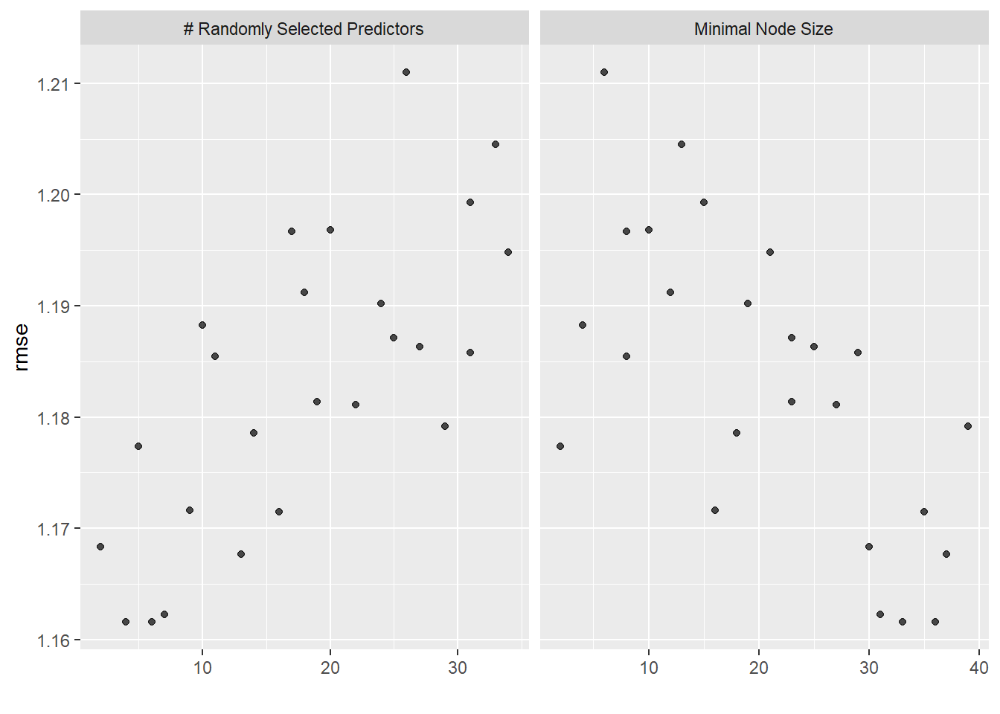
Showing and selecting best performing Models
#Showing best performing tree models
rf_resample %>%
show_best()## # A tibble: 5 x 8
## mtry min_n .metric .estimator mean n std_err .config
## <int> <int> <chr> <chr> <dbl> <int> <dbl> <chr>
## 1 4 36 rmse standard 1.16 25 0.0165 Preprocessor1_Model24
## 2 6 33 rmse standard 1.16 25 0.0164 Preprocessor1_Model14
## 3 7 31 rmse standard 1.16 25 0.0164 Preprocessor1_Model25
## 4 13 37 rmse standard 1.17 25 0.0163 Preprocessor1_Model07
## 5 2 30 rmse standard 1.17 25 0.0170 Preprocessor1_Model06#Selects best performing model
best_rf <- rf_resample %>%
select_best()This shows that “mtry 4” is the best performing models (RMSE = 1.16; STE = 0.016). However, it doesn’t really perform any better than the null model, making it a bad fit to the data.
Creating final fit based on best model permutation and plotting predicted values from that final fit model
rf_final_wf <-
rf_wf %>%
finalize_workflow(best_rf)
rf_final_wf## == Workflow ====================================================================
## Preprocessor: Recipe
## Model: rand_forest()
##
## -- Preprocessor ----------------------------------------------------------------
## 3 Recipe Steps
##
## * step_dummy()
## * step_zv()
## * step_normalize()
##
## -- Model -----------------------------------------------------------------------
## Random Forest Model Specification (regression)
##
## Main Arguments:
## mtry = 4
## trees = 1000
## min_n = 36
##
## Engine-Specific Arguments:
## num.threads = cores
##
## Computational engine: ranger#Create workflow for fitting model to train_data2 predictions
rf_final_fit <-
rf_final_wf %>%
fit(train_data2) Calculating residuals: In the Tidymodels tutorial used to do this exercise, I could not get the built in functions to cooperate (looking at you autoplot()). This is because autoplot() cannot use the output of any predict functions. Therefore, below is how we do it manually.
rf_residuals <- rf_final_fit %>%
augment(train_data2) %>% #use augment() to make predictions from train data
select(c(.pred, BodyTemp)) %>%
mutate(.resid = BodyTemp - .pred) #calculate residuals and make new row.
rf_residuals## # A tibble: 508 x 3
## .pred BodyTemp .resid
## <dbl> <dbl> <dbl>
## 1 98.7 97.8 -0.942
## 2 98.6 98.1 -0.494
## 3 98.7 98.1 -0.580
## 4 98.8 98.2 -0.579
## 5 98.8 97.8 -1.03
## 6 98.6 98.2 -0.442
## 7 98.4 98.1 -0.313
## 8 99.1 98 -1.06
## 9 98.8 97.7 -1.07
## 10 98.9 98.2 -0.654
## # ... with 498 more rowsmodel predictions from tuned model vs actual outcomes
rf_pred_plot <- ggplot(rf_residuals,
aes(x = BodyTemp,
y = .pred)) +
geom_point() +
labs(title = "Predictions vs Actual: Random Forest",
x = "Body Temperature Actual",
y = "Body Temperature Prediction")
rf_pred_plot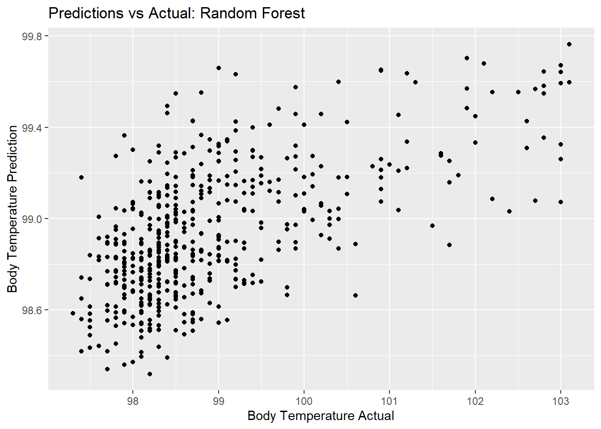 plot residuals vs predictions
rf_residual_plot <- ggplot(rf_residuals,
aes(y = .resid,
x = .pred)) +
geom_point() +
labs(title = "Predictions vs Residuals: Random Forest",
x = "Body Temperature Prediction",
y = "Residuals")
plot(rf_residual_plot) #view plot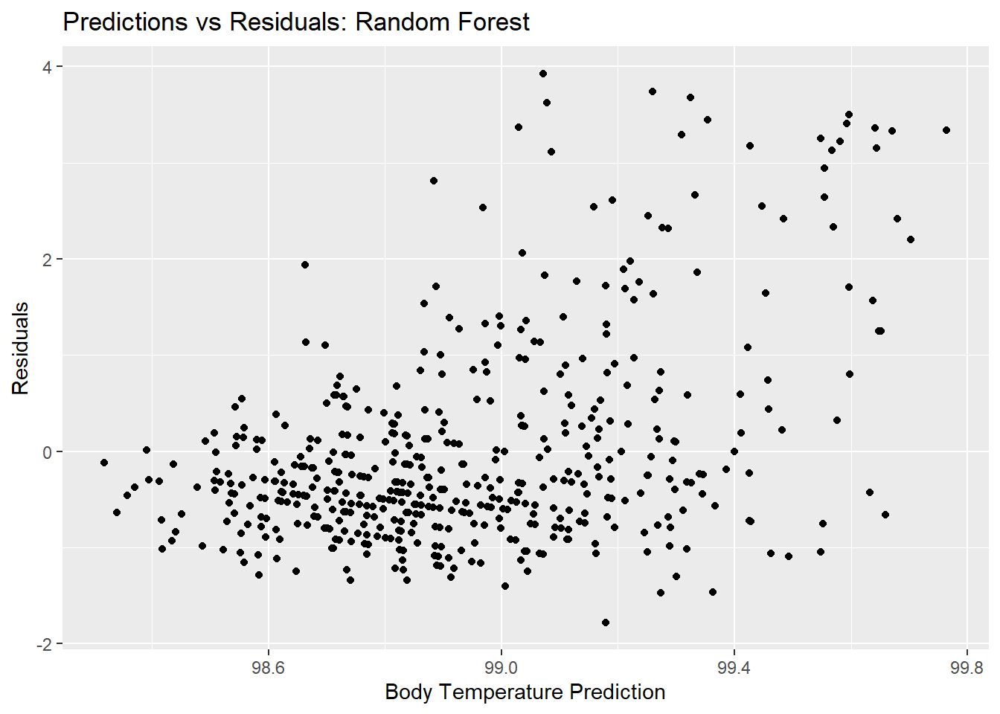
Model selection: Discussion of fit
_Based on reported RMSE alone, all the models performed pretty equally compared to the null model. However, when we made predictions and calculated residuals, visually, you could actually see some sort of relationship between actual and predicated body temperature data for the LASSO and random forest models. Therefore, I would like to exclude the decision tree based on that criteria. Finally, I would like to choose LASSO, because the random forest does not keep every single model set when running multiple permutations. Rather, it takes a random subset of “trees”. This adds some bias into the fit (in this case it may over-fit), but the advantage is that it is quicker to run. In this case, LASSO is “more accurate” and slower, but the time it took to run these models weren’t that drastic.
Final evaluation
To give the LASSO a final evaluation, we will try fitting it to the test data and compare to the train data. This will allow us to see if model performance is consistent for body temperature data.
#fit to test data
lasso_last_fit <-
lasso_final_wf %>%
last_fit(data_split2)
lasso_last_fit %>%
collect_metrics()## # A tibble: 2 x 4
## .metric .estimator .estimate .config
## <chr> <chr> <dbl> <chr>
## 1 rmse standard 1.15 Preprocessor1_Model1
## 2 rsq standard 0.0313 Preprocessor1_Model1